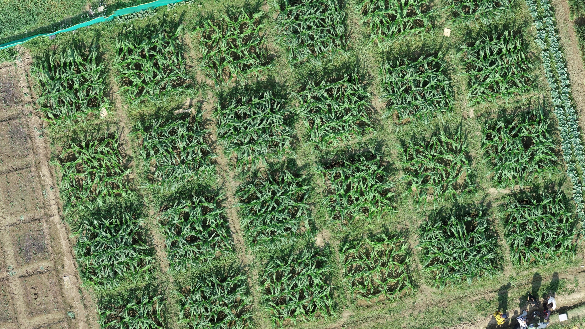
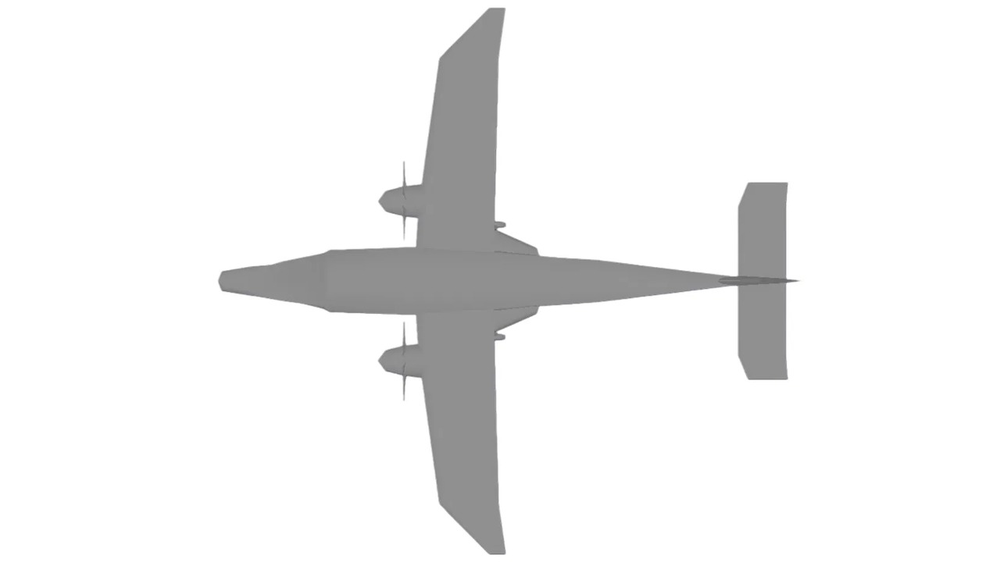
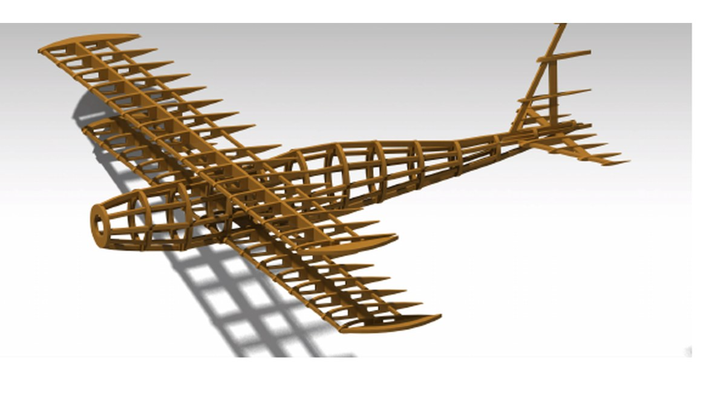
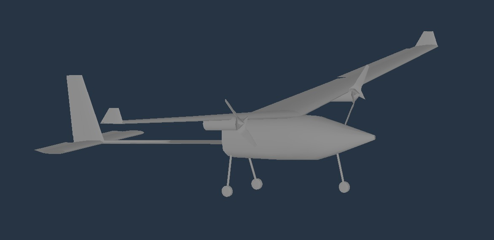
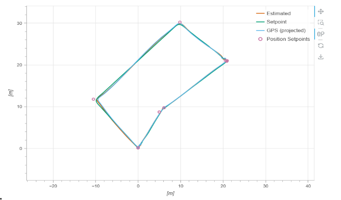
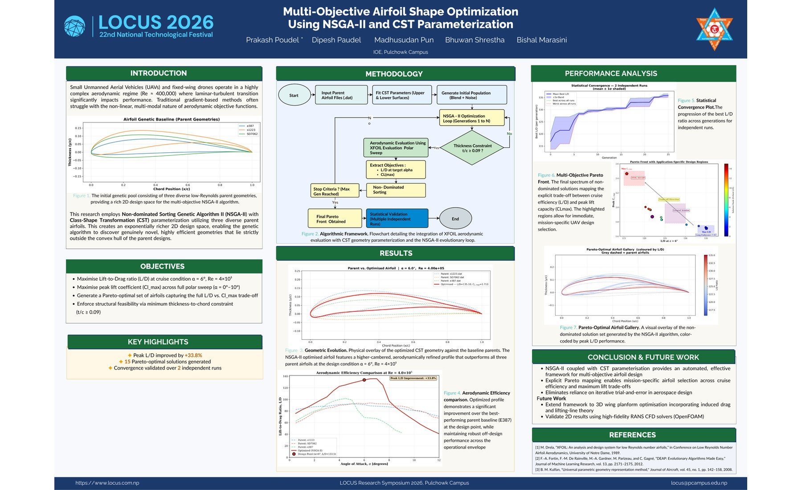

Research & Design
Computational Fluid Dynamics
CFD Simulation of the Supersonic Inlet of a Scramjet Engine
I am reproducing a Mach 5 inlet-isolator in OpenFOAM as part of my FOSSEE internship. I am currently comparing coarse, medium, and fine meshes before completing validation against the reference paper.
Thesis

UAV Aerial Mapping for Crop Health Monitoring
A drone-based study of maize nutrient status. We flew a DJI Phantom 4 Pro over a fertilizer trial in Chitwan, built orthomosaics, compared six RGB vegetation indices with SPAD readings and trained a Random Forest classifier that reached 91.6% accuracy.
Aircraft Design

Sky-Yak: 19-Seat STOL Aircraft
Design of a 19-seat STOL aircraft for Himalayan airstrips, from sizing and stability analysis to simulator flight tests, ending with a Cooper-Harper rating of 4.

Grumman F3F Biplane Scale Model
A 1:10 scale Grumman F3F biplane modeled in CATIA, checked in XFLR5, laser cut from plywood and assembled by hand.
UAV

Hawkeye: Wildlife Surveillance UAV
A twin-engine UAV designed to stay in the air for more than 24 hours over protected areas, with a conceptual camera payload and stability checked in the X-Plane simulator.

Autonomous Delivery Using Quadcopter
A quadcopter that flies a delivery mission on its own, drops its payload with a servo at a set waypoint and returns to land. Built on a Pixhawk 4 running PX4.
Optimization

Multi-Objective Airfoil Optimization Using NSGA-II
A genetic algorithm that designs airfoils for small UAVs. It improved peak L/D by 33.8% over the best of three parent airfoils and produced 15 Pareto-optimal designs.